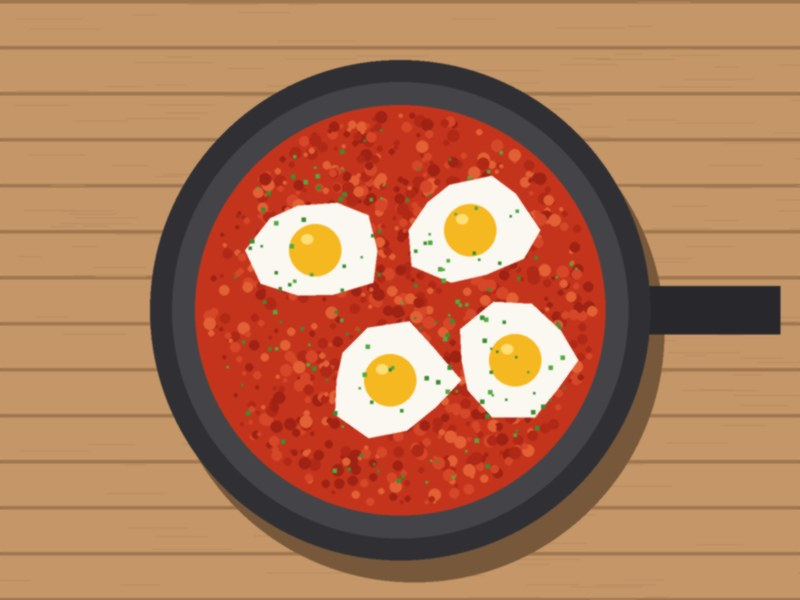

Add recipe
שקשוקה ביתית
שקשוקה היא מנת בוקר חמימה ומשביעה, עם רוטב עגבניות עשיר וביצים רכות.
היא מוכנה בסיר אחד, בלי מאמץ, ומתאימה לכל ארוחה.

מעט על המתכון
המתכון הגיע מהמשפחה: כך הכינו אצלנו שקשוקה בכל שבת בבוקר, עוד מהימים שבהם הכול התבשל במחבת אחת גדולה.
אוהבים להכין אותו בבוקר של חופש, כשכולם יושבים יחד, וגם בערב קריר כשרוצים ארוחה מהירה וחמה.
למי זה מתאים?
לכל מי שאוהב עגבניות וביצים
מצרכים
- 4 עגבניות בשלות, קצוצות
- 1 בצל גדול, קצוץ
- 3 שיני שום כתושות
- 4 ביצים
- 3 כפות שמן זית
- תבלינים
- מלח
- פלפל שחור
- פפריקה
- חופן פטרוזיליה קצוצה
אופן ההכנה
- מחממים שמן במחבת ומטגנים את הבצל עד שהוא שקוף.
- מוסיפים את השום ומערבבים דקה.
- מוסיפים את העגבניות והתבלינים ומבשלים כ-15 דקות, עד שמתקבל רוטב סמיך.
- יוצרים גומות ברוטב ושוברים לתוכן את הביצים.
- מכסים ומבשלים 8 דקות, עד שהחלבון מתייצב.
- מפזרים פטרוזיליה ומגישים חם.
נתוני המתכון
| שלב | זמן (בדקות) | טמפרטורה |
|---|---|---|
| חיתוך ירקות | 10 | ללא בישול |
| בישול הרוטב | 15 | אש בינונית |
| הוספת הביצים | 8 | |
| הגשה | 2 | חם |
| סך כל זמן העבודה | 35 דקות | |
| מתכון ל-4 מנות | ||
טיפים
- כדאי להשתמש בעגבניות בשלות מאוד, כדי שהרוטב יהיה מתוק.
- אפשר להוסיף פלפל חריף קצוץ למי שאוהב חריף. קראו עוד על המנה בוויקיפדיה.
- מגישים עם לחם טרי, לטבילה ברוטב.